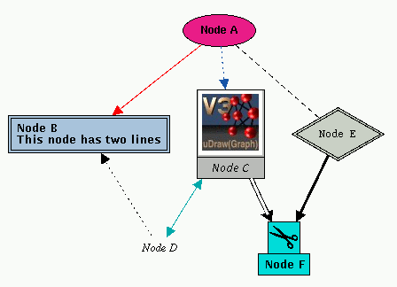

Manual
Example of a Term Representation
This example demonstrates a complex term representation of a graph, where most of the available node and edge attributes are used. The figure below shows the resulting graph visualization in uDraw(Graph).
[
l("Node A",n("Module",[a("COLOR","#f31d8b"),
a("OBJECT","Node A"),
a("_GO","ellipse"),
a("FONTFAMILY","helvetica")],
[
l("Edge A->B",e("",[a("EDGECOLOR","red")],
l("Node B",n("anything",[a("COLOR","light steel blue"),
a("BORDER","double"),
a("OBJECT","Node B\nThis node has two lines")],
[
l("Edge B->D",e("",[a("EDGEPATTERN","dotted"),
a("_DIR","inverse")],
r("Node D")))
])))),
l("Edge A->C",e("",[a("EDGEPATTERN","dotted"),
a("EDGECOLOR","#0054aa")],
l("Node C",n("anything",[a("_GO","image"),
a("IMAGE","uDrawGraph_logo.gif"),
a("COLOR","gray"),
a("OBJECT","Node C"),
a("FONTSTYLE","italic")],
[
l("Edge C->D",e("anything",[a("EDGECOLOR","#00aaaa"),
a("_DIR","both")],
l("Node D",n("Module",[a("OBJECT","Node D"),
a("_GO","text"),
a("FONTFAMILY","times"),
a("FONTSTYLE","italic")],[])))),
l("Edge C->F",e("anything",[a("EDGEPATTERN","double")],
r("Node F")))
])))),
l("Edge A->E",e("",[a("EDGEPATTERN","dashed"),
a("_DIR","none")],
l("Node E",n("anything",[a("COLOR","LightGray"),
a("FONTFAMILY","courier"),
a("FONTSTYLE","normal"),
a("BORDER","double"),
a("OBJECT","Node E"),
a("_GO","rhombus")],
[
l("Edge E->F",e("anything",[a("EDGEPATTERN","thick")],
l("Node F",n("anything",[a("COLOR","#00dddd"),
a("OBJECT","Node F"),
a("HIDDEN","true")],
[
l("Edge F->G",e("anything",[],
l("Node G",n("anything",[a("OBJECT","Node G")],[]))))
]))))
]))))
]))
]

Visualization of the example in uDraw(Graph)
Copyright © 2005, Universität Bremen. All rights reserved.